1. Brinjal or Eggplant

Tamil Name is "Kathrikai"
Benefits Of The Brinjal or Eggplant
• They contain a good amount of vitamins, minerals and fiber in few calories.
• May Reduce the Risk of Heart Disease.
• Could Help With Weight Loss.
• Very Easy to Add to Your Diet.
• It can also be used as a low-calorie replacement for many high-calorie ingredients.
Video Here
2. Ladies Finger or Okra
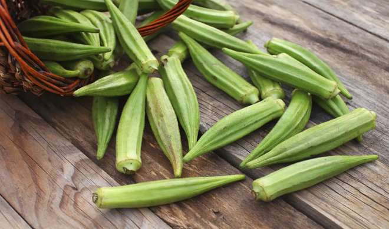Tamil Name is "Vendaikai"
Benefits Of The Ladies Finger or Okra
• Okra is an excellent source of vitamins C & K1.
• Okra contains a type of protein called lectin, which may inhibit the growth of human cancer cells.
• It helps lower the risk of a neural tube defect, which affects the brain and spine of a developing fetus.
Video Here
3. Ivy Gourd

Tamil Name is "Kovakkai"
Benefits Of The Ivy Gourd
• Ivy gourd extract blood sugar.
• Ivy Gourd Prevents Obesity.
• Ivy Gourd for Fatigue.
• Ivy Gourd Defends Nervous System.
• Ivy Gourd Increased Metabolism.
• Ivy Gourd Improved Digestion.
• Ivy gourd for kidney stones.
Video Here
4. Turkey Berry
Tamil Name is "Chundakkai"
Benefits Of The Turkey Berry
• Promotes Digestion.
• Treats Anaemia.
• Manages Diabetes.
• Regulates Menstruation.
• Effectively Combats Fever.
• Safeguards Against Infection.
Video Here
5. Potato
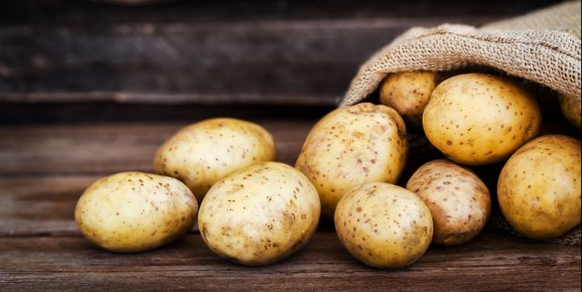Tamil Name is "Urulaikilangu"
Benefits Of The Potato
• Potatoes are an excellent source of many vitamins and minerals.
• Potatoes are rich in compounds like flavonoids, carotenoids and phenolic acids.
• Potatoes contain a special type of starch known as resistant starch.
• The resistant starch in potatoes may also improve digestive health.
Video Here
6. Drum Stick or Moringa
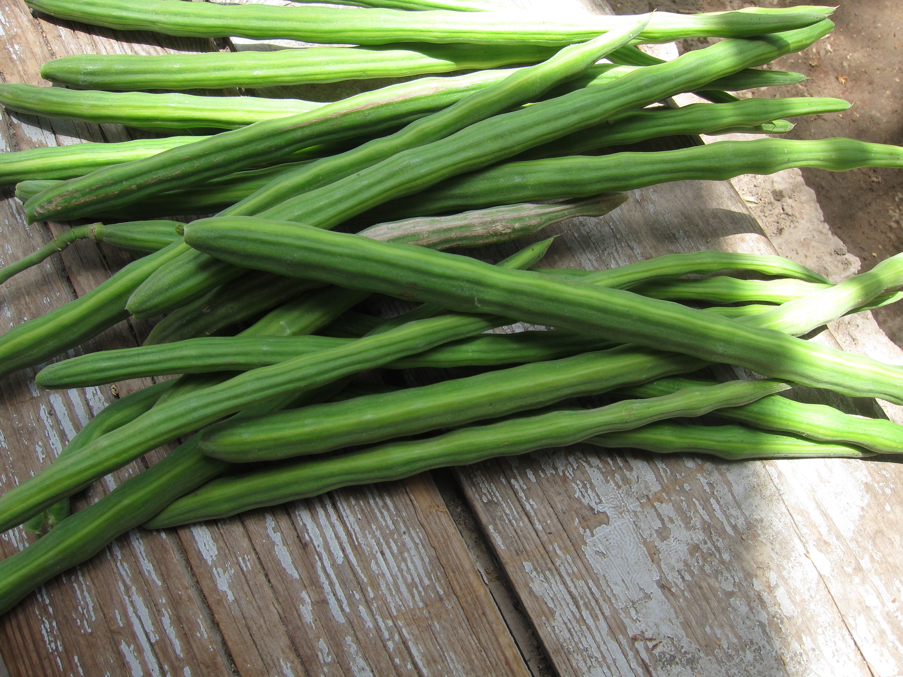Tamil Name is "Murungaikkai"
Benefits Of The Drum Stick or Moringa
• Moringa is known for preventing acne and other skin issues.
• Good for hair and skin.
• Moringa is mostly advised to consume during the month of March- April, as due to its medical properties it can provide immunity against chicken pox.
Video Here
7. Board or Fava Beans
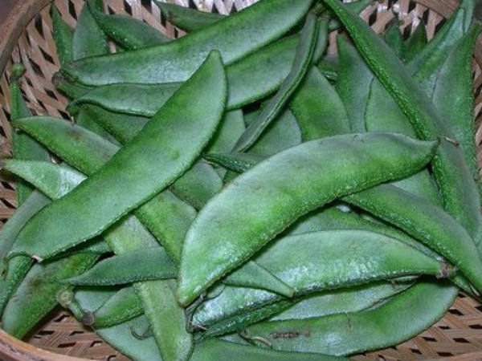Tamil Name is "Avarakkai"
Benefits Of The Board or Fava Beans
• For their relatively small size, fava beans pack an incredible amount of nutrients.
• May Help With Parkinson’s Disease Symptoms.
• Fava beans are loaded with folate, a nutrient that promotes healthy fetal development.
• May Help Lower Cholesterol.
Video Here
8. Cluster Beans

Tamil Name is "Kothavarangai"
Benefits Of The Cluster Beans
• Full of Nutrients.
• Resolve anemia.
• Cluster beans contain gylconutrients that help in controlling blood sugar levels.
• Promotes heart health.
• Recommended during pregnancy.
• Better Blood Circulation.
Video Here
9. Green or Raw Banana
Tamil Name is "Vazhakkai"
Benefits Of The Green or Raw Banana
• About 100 grams of banana has 2.6 grams of fibre.
• Just like the ripe bananas, green bananas too are extremely rich in potassium.
• Green bananas are a powerhouse of vitamins and minerals.
• Raw bananas have low sugar content.
Video Here
10. Bottle Gourd

Tamil Name is "Sorakkai"
Benefits Of The Bottle Gourd
• You’ll definitely find one or the other person who is striving to lose weight.
• Bottle Gourd is a common medicine for disturbed digestion.
• Facilitates liver health.
• Acts as a natural sedative.
• Reduces the risk of several types of cancers and is good for diabetics.
Video Here
11. Ash Gourd

Tamil Name is "Ash Gourd"
Benefits Of The Ash Gourd
• Ash gourd stimulates the normal elimination of body wastes via the excretory system in the body.
• This immensely benefits lung function and also prevents any allergies and breathing difficulties.
• Ash gourd is an ideal option if you are looking to gain long and strong hair.
Video Here
12. Bitter Melon or Gourd

Tamil Name is "Pavakkai"
Benefits Of The Bitter Melon or Gourd
• In recent years, several studies confirmed the fruit’s role in blood sugar control.
• Several animal studies found that bitter melon may decrease cholesterol levels to support overall heart health.
• Bitter melon has a sharp flavor that works well in many dishes.
Video Here
13. Radish
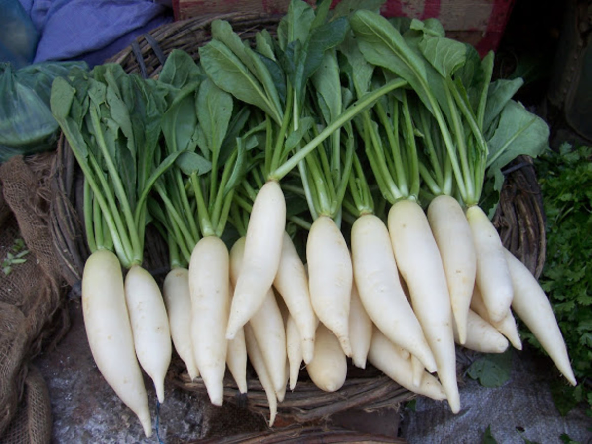Tamil Name is "Mullangi"
Benefits Of The Radish
• Fortifies Blood Vessels.
• Metabolism-Friendly.
• Red radishes are packed with Vitamins E, A, C, B6, and K.
• Good for the Skin.
• Good for Hydration.
• Improves Immunity.
Video Here
14. Tomato
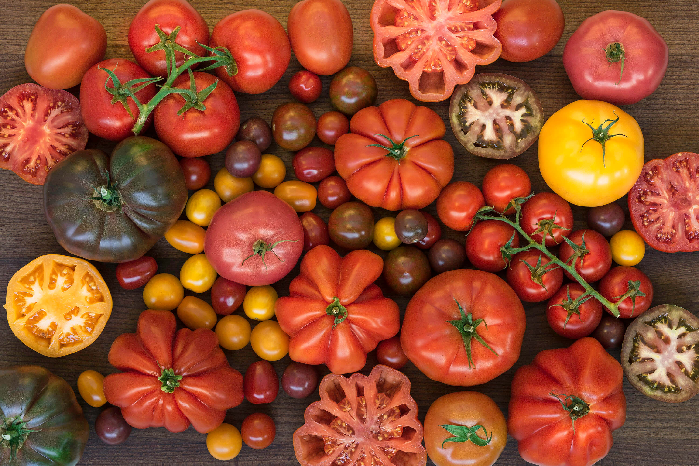Tamil Name is "Thakkali"
Benefits Of The Tomato
• Maintaining a low sodium intake helps to maintain healthful blood pressure.
• Tomatoes are an excellent source of vitamin C and other antioxidants.
• The fiber, potassium, vitamin C, and choline content in tomatoes all support heart health.
• A deficiency of vitamin C can lead to scurvy.
Video Here
15. Pumkin
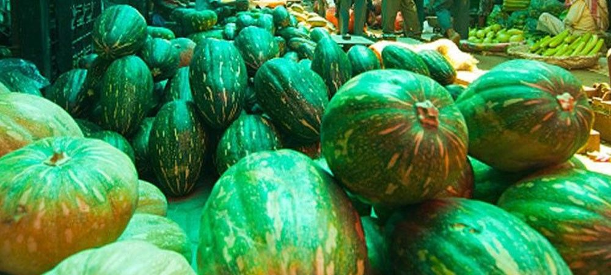Tamil Name is "Poosanikkai"
Benefits Of The Pumkin
• Highly Nutritious and Particularly Rich in Vitamin A.
• High Antioxidant Content May Reduce Your Risk of Chronic Diseases.
• Packs Vitamins That May Boost Immunity.
• Vitamin A, Lutein and Zeaxanthin May Protect Your Eyesight.
Video Here
16. Garlic
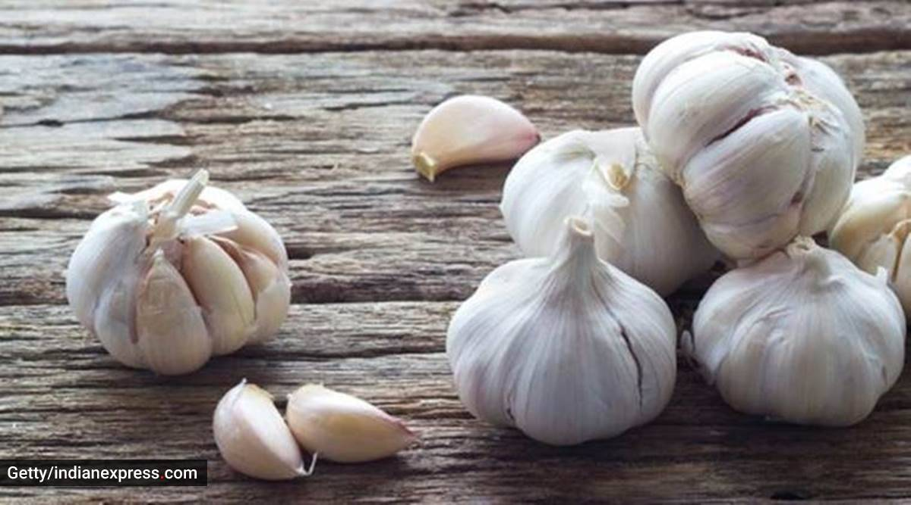Tamil Name is "Poondu"
Benefits Of The Garlic
• Garlic is going to provide you relief from that stubborn cold and flu.
• It is also immensely beneficial to regulate blood pressure and blood sugar levels.
• It is said to strengthen the immunity of the body against cancer.
• It is also an effective remedy for fungal infections like athlete's foot and ringworms.
Video Here
17. Elephant Yam

Tamil Name is "Karunai Kizhangu"
Benefits Of The Elephant Yam
• It is widely used as a slimming food.
• Elephant Yam is really very helpful in maintaining good cardiovascular health.
• It also helps in relieving the clots formed in arteries and veins.
• The powerful antioxidants present in elephant foot yam is said to be effective in slowing down the aging process.
Video Here
18. Onion
Tamil Name is "Vengayam"
Benefits Of The Onion
• Onions might have positive effects on several different aspects of health.
• Collagen provides structure to skin and hair.
• Some hypothesize that onions inhibit tumor growth and cell mutation.
• Further research is necessary to confirm which compounds in onion have protective effects against cancer.
Video Here
19. Ginger
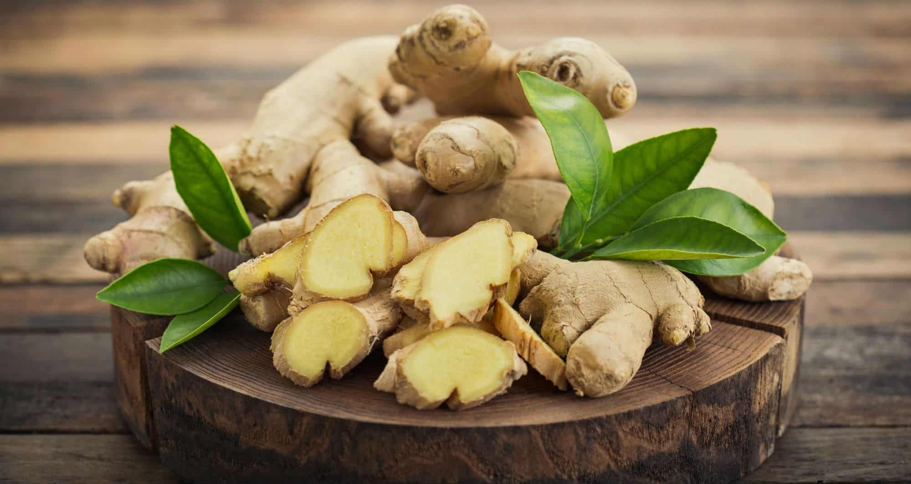Tamil Name is "Inji"
Benefits Of The Ginger
• Many people use ginger to help recover from a cold or the flu.
• Ginger may have anti-inflammatory, antibacterial, antiviral, and other healthful properties. Below are some of the possible medicinal uses of ginger.
• Ginger does not provide protein or other nutrients.
Video Here
20. Green Chilly
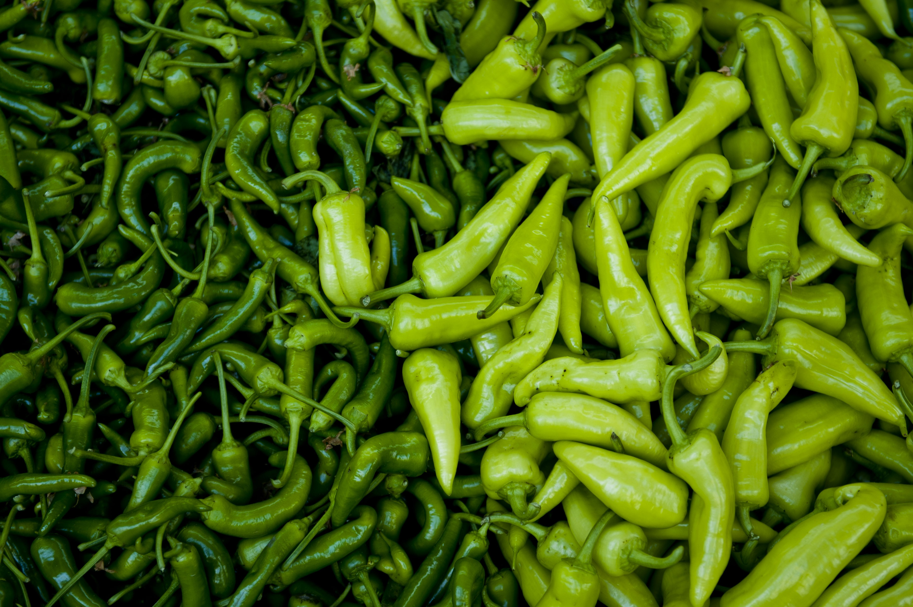Tamil Name is "Milagai"
Benefits Of The Green Chilly
• Green chillies also exert a number of beneficial effects on the cardiovascular system.
• This action makes it beneficial in combating the common cold or sinus infections.
• Loaded with Vitamin C and beta-carotene, green chillies are great for healthy eyes, skin and immune system.
Video Here
21. Small Onion

Tamil Name is "Chinna Vengayam"
Benefits Of The Small Onion
• Regular intake of small onions does not cause nervous breakdown in our body.
• Eating small onion will get rid of cold quickly.
• Chewing and eating small onions will reduce toothache quickly.
• Eating small onions daily does not cause digestive problems in our body.
Video Here
22. Snake Gourd

Tamil Name is "Pudalangai"
Benefits Of The Snake Gourd
• Accelerates Weight Loss.
• Augments Heart Function.
• Detoxifies The Kidneys.
• Enhances Digestive System.
• Strengthens Respiratory Processes.
• Complements Ketogenic Diet.
Video Here
23. Ridge Gourd
Tamil Name is "Peerkangai"
Benefits Of The Ridge Gourd
• Having profuse quantities of iron, eating ridge gourd regularly with meals helps to cure anemia, caused due to iron deficiency.
• Ridge gourd is inherently low in calories and possesses negligible concentrations of saturated fats and cholesterol.
• Ridge gourd is bestowed with the ability to purify blood of toxic wastes.
Video Here
23. Mashroom
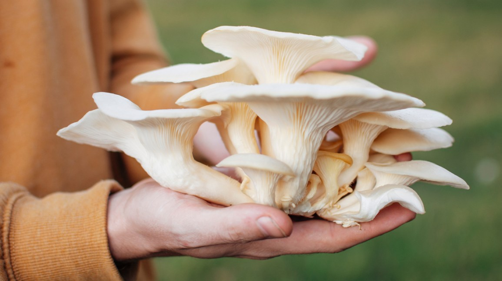Tamil Name is "Kalaan"
Benefits Of The Mashroom
• Mushrooms are a low-calorie food that packs a nutritional punch.
• Mushrooms are widely known for their great taste and amazing health benefits.
• Potassium also lessens the tension in blood vessels, potentially helping to lower blood pressure.
• The anti-inflammatory effect of mushrooms has been shown to greatly improve the efficiency of the immune system.
Video Here
25. Raw Mango

Tamil Name is "Mangai"
Benefits Of The Raw Mango
• Hailed as the king of fruits, mangoes are rich in essential nutrition and high in vitamin C.
• Eating raw mangoes can help us in many ways.
• It is rich in vitamin A and vitamin E that enhances one's hormonal system.
• It is the most loved refreshing drink prepared mostly in summers.